| 首页 | 公告 | Win/Office链接 | 使用教程 | 激活专区 | 装机必备 | 软件推荐 | 视频 |
下载地址：群文件→密钥接收器
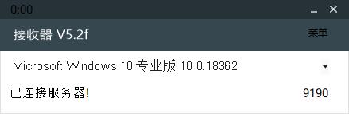
默认是Windows，如果需要激活Office请切换到Office。
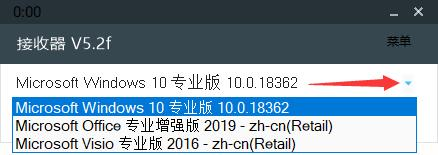
请注意不要遮挡右下角序号。
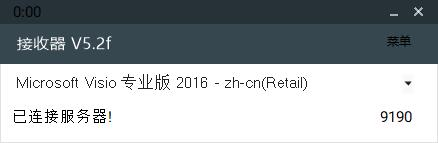
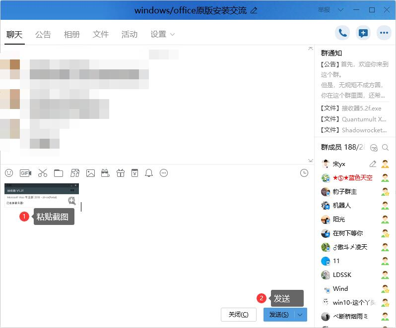
激活时请不要操作，等待激活成功。
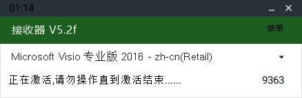
激活成功后请对帮助你的人说声谢谢，让这个世界更加温暖。
点击右上角菜单，选择“备份激活信息”。
备份的激活信息在程序根目录“backup”文件夹中，在重装系统后即可通过该程序和文件夹恢复激活信息。
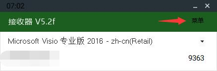
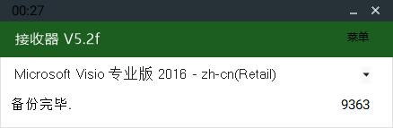
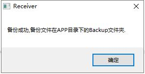
请保持程序和“backup”文件夹在同一目录。
点击右上角“菜单”，选择“逐条恢复激活信息”
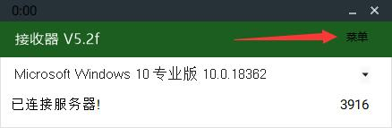
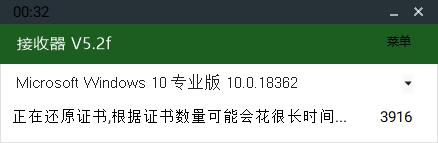
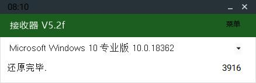
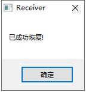